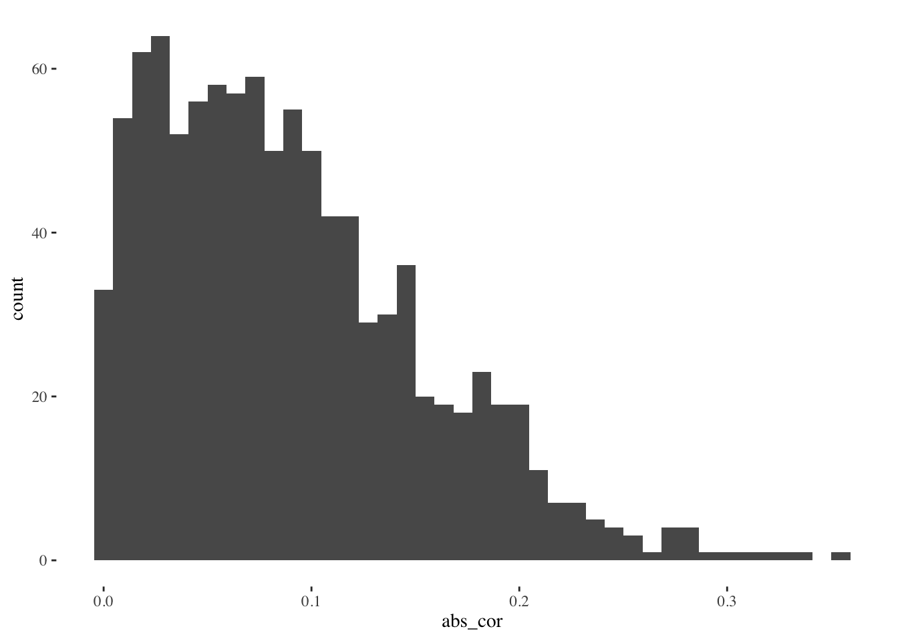
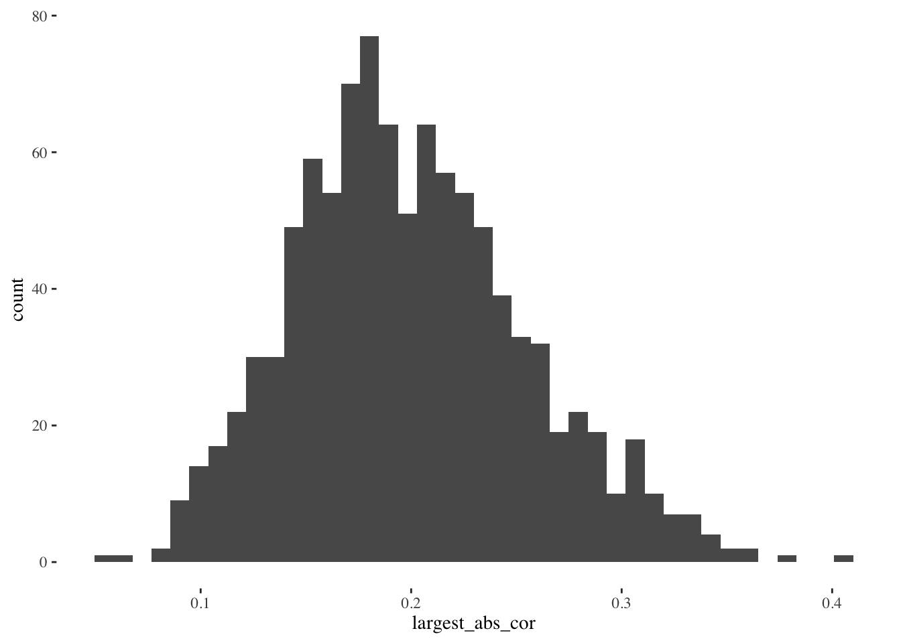

Estimate Std. Error t value Pr(>|t|)
(Intercept) -0.19 0.19 -1.0 0.309
caramelTRUE -0.54 0.26 -2.1 0.042
sugarpercent 0.79 0.35 2.3 0.026Significance tests and the reproducibility crisis
Significance testing may be one of the most popular statistical tools in science. Researchers and journals often treat significance–having a \(p\)-value \(< 0.05\)–as indication that a finding is true and perhaps publishable. But the tests used to compute many of the \(p\)-values people still rely on today were developed over a century ago, when “computer” was still a job title. Now that we have digital computers and it’s standard practice to collect and analyze “big data,” the mathematical assumptions underlying many classical significance tests are being pushed beyond their limits.
The journal Nature surveyed 1,576 scientists, asking them whether there is a reproducibility crisis, and found about 90% agreed. Across a range of disciplines, over 40% of respondents had tried and failed to reproduce at least one of their own experiments. What’s going on?
Andrew Gelman suggested an analogy to describe how data analysis often proceeds in practice: the garden of forking paths. Researchers have to make many choices, and each choice represents a turn down a new fork in the path. Out of the many possible paths, how many end in significant, publishable findings, and how many in dead ends? Nobody wants to just give up when they reach a dead end, so maybe they retrace some of their steps and try a different path.
Model selection might be the most labyrinthine part of this garden.
What is model selection bias?
To illustrate with an example, we’ll consider the candy_rankings data from the fivethirtyeight package. The outcome variable is how often a given candy won in popularity matchups against other candies, and the predictor variables are various properties like whether or not the candy has chocolate, whether or not it’s fruit flavored, how sugary it is relative to other candies, and so on. There are 85 candies and 11 predictor variables in the dataset.
You can read the original article about this data here. In the article, they find that chocolate seems to be the most important variable for increasing the win percentage for a candy. We’ll approach the problem a little differently, and use model selection to pick a subset of the 11 predictor variables. Then we’ll report significance tests for the selected variables to show they really are important. This is a fairly common sequence of steps for analyzing data in linear regression.
Details for the curious: this particular method is a “greedy” algorithm that adds one predictor variable at a time into the model starting with the variable that has the highest correlation with the outcome, and stopping after choosing the number of variables in a data-driven way. These details are not important for the overall message of this post. Any model selection method can cause selection bias.
As you can see, the model selection algorithm chose a nice interpretable model with only a few variables, and the small \(p\)-values for significance tests tell us they are truly important and our model is good…
Except none of this is true! The reason I didn’t show the code for loading the dataset earlier is that I created the outcome variable with Y = rnorm(n) (this function in R generates \(n\) random numbers following the normal distribution). Instead of using the actual outcome variable from the data, I generated a random normal variable, totally independent of the predictors. And yet, we found a model with predictor variables that are significant.
A small simulation study
Let’s think about this to get some intuition. If we have one predictor variable \(X_1\) and we generate \(Y\) from rnorm(n), then the correlation (in absolute value) between \(X_1\) and \(Y\) will probably be small. Let’s do this many times and look at the distribution of (absolute) observed correlations:

These correlations are pretty small. The bulk of the distribution is less than 0.1. We probably wouldn’t mistake them for signal. But now, what if we have more predictor variables, and we select the best (absolute) correlation each time?

When we have 11 predictor variables and we select the one with the largest correlation, the resulting distribution of correlations is larger. The bulk is now centered around 0.2. We might mistake these larger correlations for signal, when in fact they only reflect the fact that we searched through the garden of forking paths and chose the most impressive path out of 11. Can you imagine how much worse this problem would be if instead of 11 variables we had 100 to choose from, or 1000?
Returning to the broader topic of model selection
Model selection works by choosing variables that seem to be the best at predicting the outcome. The more variables we have to choose from, the more likely it is we find one that predicts \(Y\) very well, even just by pure randomness, as the plots above show. In general, this model selection bias gets larger as the size of our “search space” increases – meaning not only number of variables, but also the complexity of the fitted relationships (e.g. non-linear). And in general, significance tests for the coefficients in the selected model will be biased toward smaller \(p\)-values, potentially causing us to commit more Type 1 errors.
This is part of the reason why scientists are sometimes unable to reproduce their own experiments. When they got a significant result (\(p < 0.05\)) the first time, it may have been due to model selection bias. When they try to reproduce the result, the noise just goes in a different direction, and their original result disappears.
Selection bias can make noise look like signal
I hope you are convinced of this take home message. I began with a story about the candy dataset, instead of a simulation, because when people are analyzing their own data they never believe it might just be noise. The variables have names and meanings. When we see regression model output our first instinct may be to start interpreting the coefficients, becoming more confident about those that match our preconceptions and rationalizing about those that do not. But as we just saw, model selection makes it possible, and maybe even likely, to get nice looking significance test results even if the outcome variable is just pure noise.
In the candy example the outcome variable was noise, but that’s not essential. We could have had a real outcome variable but our predictor variables are all noise. Or we could have a mixture of real signals and noise. As long as there’s many variables, searching among them for the best makes the significant test results biased toward small \(p\)-values.
In future posts, I’ll describe three approaches to fixing this problem, including one that I’ve worked on in my own research.